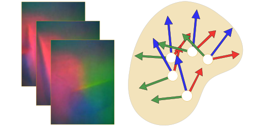
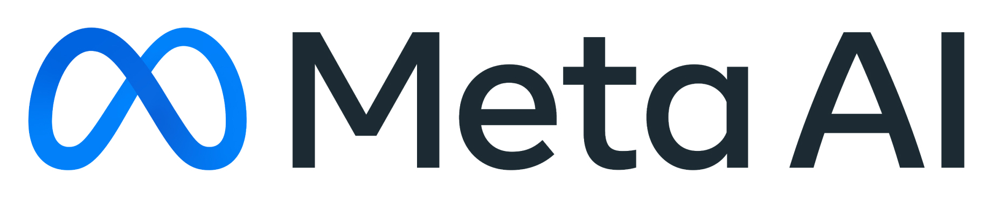

MidasTouch: Monte-Carlo inference
over distributions across sliding touch
CoRL 2022 (Oral)

- Sudharshan Suresh CMU RI / Meta AI
- Zilin Si CMU RI
- Stuart Anderson Meta AI
- Michael Kaess CMU RI
- Mustafa Mukadam Meta AI
TL;DR: We track the pose distribution of a robot finger on an
object's surface using geometry captured by a tactile sensor
Full pipeline
It comprises three distinct modules, as illustrated above: a tactile depth network (TDN), tactile code network (TCN), and particle filter. At a high-level, the TDN first converts a tactile image into its local 3D geometry via a learned observation model. The 3D information is then condensed into a tactile code by the TCN through a sparse 3D convolution network. Finally, the downstream particle filter uses these learned codes in its measurement model, and outputs a sensor pose distribution that evolves over time.